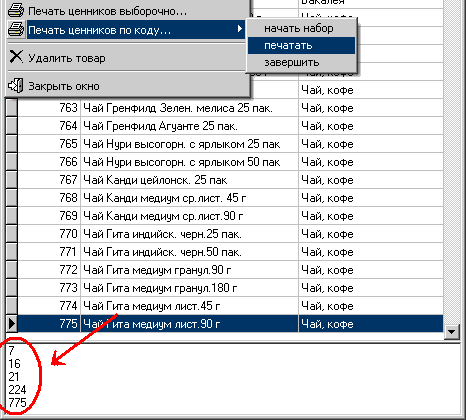

Для вывода на печать списка-отчета в
виде ценников на полки независимо от признака товарной группы, но не путем
выбора из дерева товаров, как в предыдущем пункте. Во-первых выберите "начать
набор", при этом внизу справочника товаров откроется окошко. Затем при помощи
поиска товаров в справочнике по коду (набираем на цифровой клавиатуре номер,
затем Enter) находим нужный товар и нажимаем на клавиатуре пробел (Space). Номер
добавляется в окошко внизу. И так продолжаем пока не выберем все товары нужные
для печати ценников. Если номер добавлен случайно, выделите его в окошке и
нажмите клавишу Delete - он будет удален из окошка.
Затем в меню "Печать ценников по коду..." выберите
"печатать" и откроется справочник складов по которому нужно определить розничные
цены, в нем выделите нужный склад и нажмите Enter.

После вывода на печать ценников закроем окошко внизу
справочника: в меню "Печать ценников по коду..." выберите
"завершить".